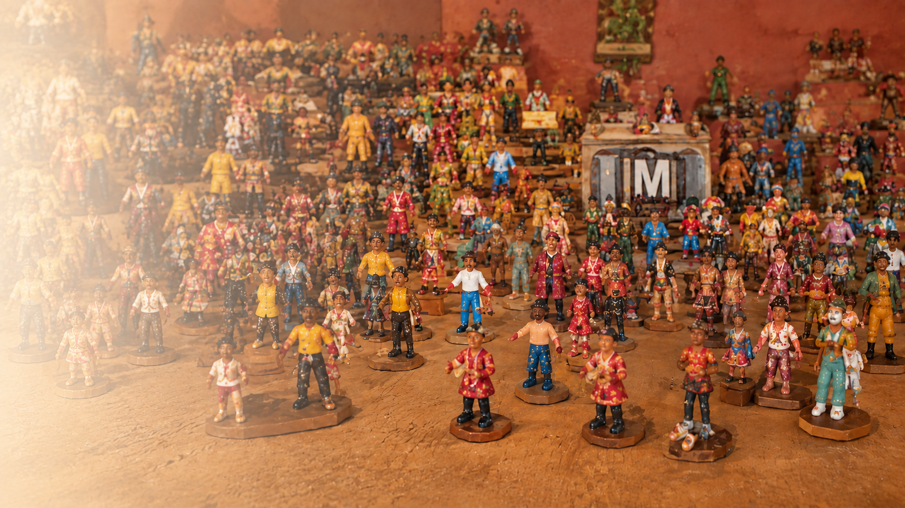
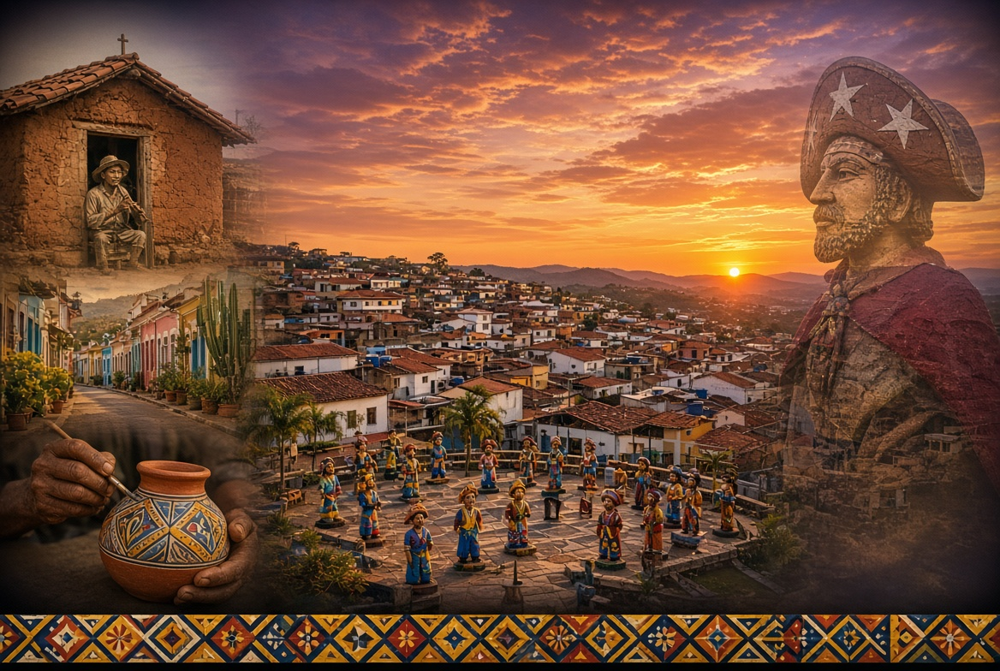
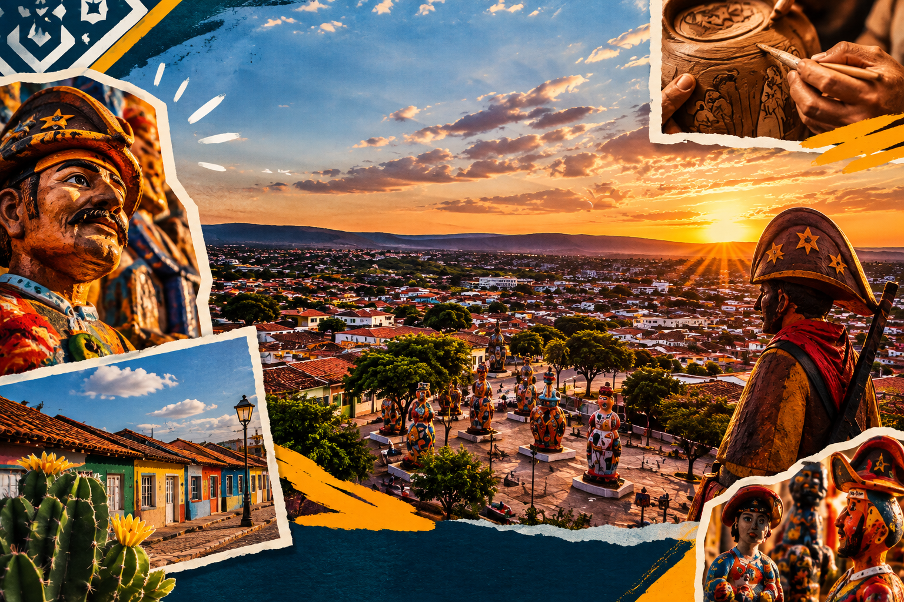
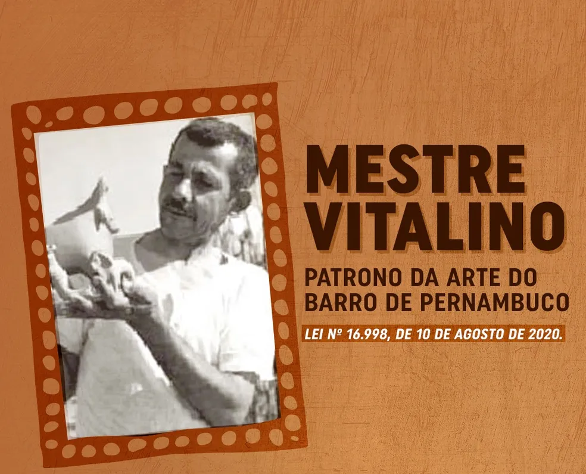
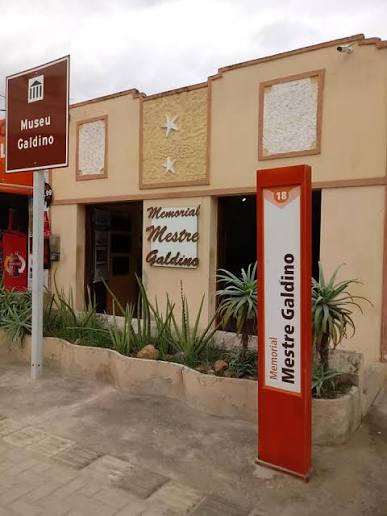
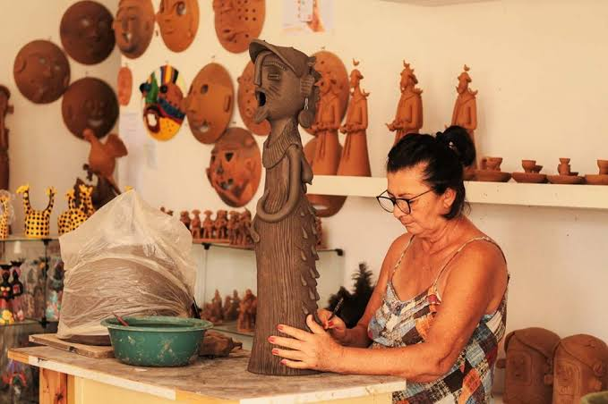

PATRIMÔNIO • ARTE • TRADIÇÃO
Descubra o Alto do Moura, um dos grandes símbolos da cultura popular de Caruaru, onde o barro se transforma em memória, identidade e arte.
Conheça nossa história

SOBRE O ALTO DO MOURA
O Alto do Moura, estabelecido como um vibrante núcleo de artesanato em barro, é reconhecido como um importante centro de artes figurativas. Situado a cerca de 7 km do centro de Caruaru, o bairro passou por processo de valorização e revitalização cultural.
Desde meados do século XX, as peças produzidas pelas famílias locais ganharam destaque na tradicional Feira de Caruaru, fortalecendo a relação entre arte, comércio e cultura.
NOSSA CULTURA
Um patrimônio cultural vivo, formado por pessoas, histórias, técnicas e tradições transmitidas entre gerações.
Cenas do cotidiano nordestino ganham forma pelas mãos dos artesãos, mantendo viva uma tradição reconhecida nacional e internacionalmente.
Arte popular, memória sertaneja, culinária regional e hospitalidade fazem parte da experiência cultural do bairro.
São João, feiras de artesanato e eventos culturais aproximam visitantes da música, da gastronomia e das expressões populares.
ARTE E LEGADO
A tradição do Alto do Moura continua sendo construída por diferentes gerações de artistas.

Nome fundamental para a consolidação da cerâmica figurativa do Alto do Moura, representando cenas e personagens do cotidiano nordestino.

Artista associado à força criativa da cerâmica popular e à construção da identidade artística do bairro.

Ateliês e famílias continuam transmitindo técnicas e renovando a produção artesanal, mantendo a tradição em movimento.
PLANEJE SUA VISITA
Uma experiência para conhecer ateliês, obras, museus, sabores e manifestações culturais de Caruaru.
Alto do Moura, Caruaru — Pernambuco. O bairro está localizado a aproximadamente 7 km do centro de Caruaru.
Entre os destaques estão o São João de Caruaru, feiras de artesanato e eventos culturais sazonais.